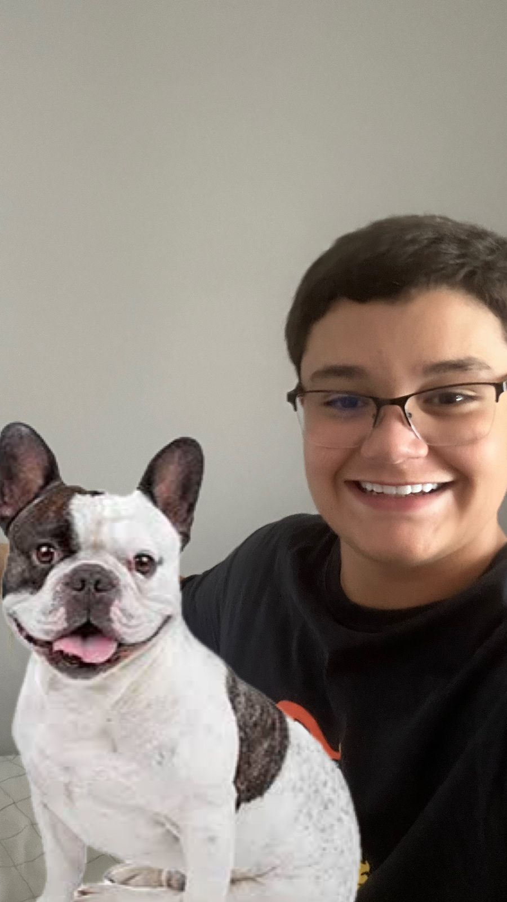

Querido Papai,
Você sabia que os Bulldogs Franceses são conhecidos por sua personalidade amorosa e por serem ótimos companheiros?

Eles são tão adoráveis e fofinhos. Olha só essas carinhas!
Eles são conhecidos por serem calmos, carinhosos e se dão bem com crianças, como eu!
Por favor, Papai, posso ter um Bulldog Francês para chamar de meu? Prometo cuidar dele e amá-lo muito!
Com amor,
Seu filho Carlinhos, para Carlos.